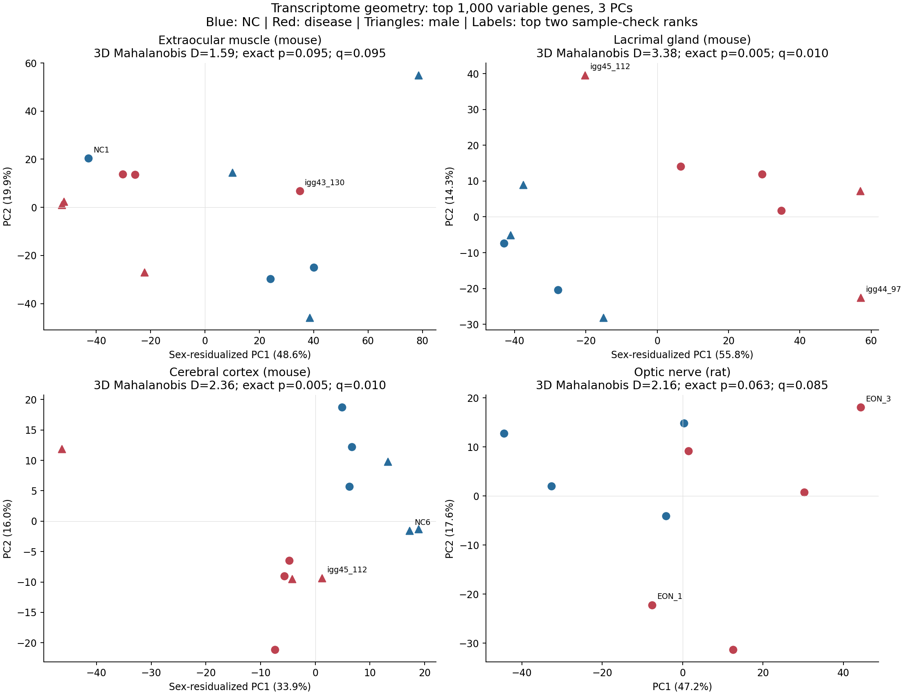
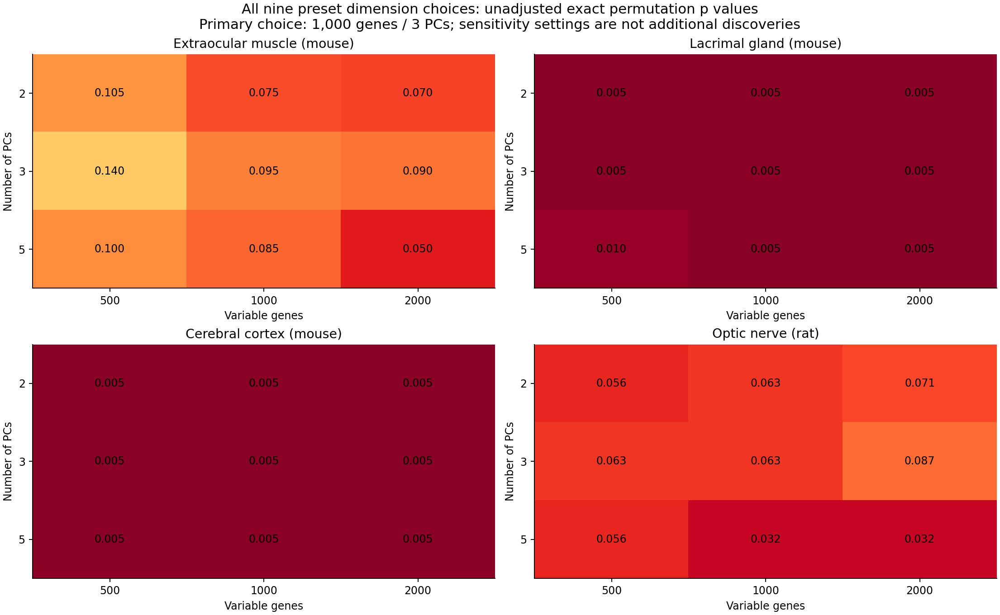
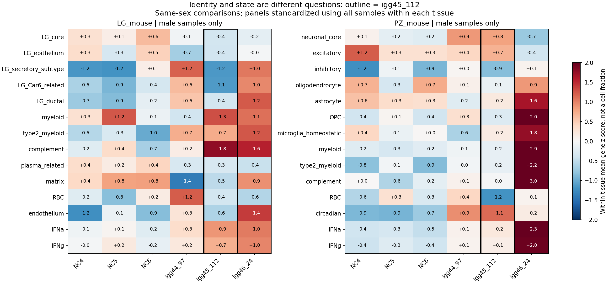
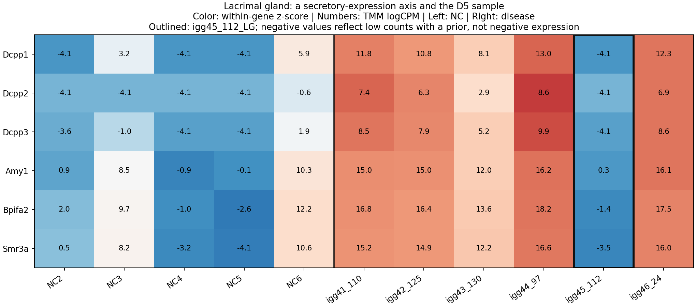

∑
统计画布
矩阵画布
转录组
样本核查
全量下载
TRANSCRIPTOME
转录组
整体分析报告 ↗
igg45_112 深入核查 ↗
2026.11.06 · 探索性分析
表达
组织
正在读取数据清单…
横轴基因
纵轴基因
表达单位
TMM logCPM
原始整数计数
NC 对照
Disease 疾病
当前样本
全量基因表达表
搜索基因
上一页
下一页
分析结果
方法与全部图表 ↗
整体表达空间与参数敏感性图


igg45_112
完整核查报告 ↗
同性交叉表达状态与原始核查图


全量数据
下载全部矩阵与结果 ZIP ↓
全部统计结果文件